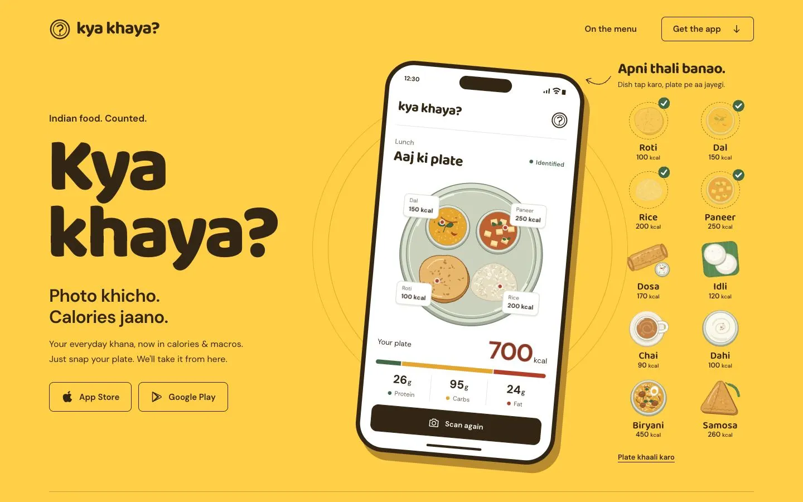
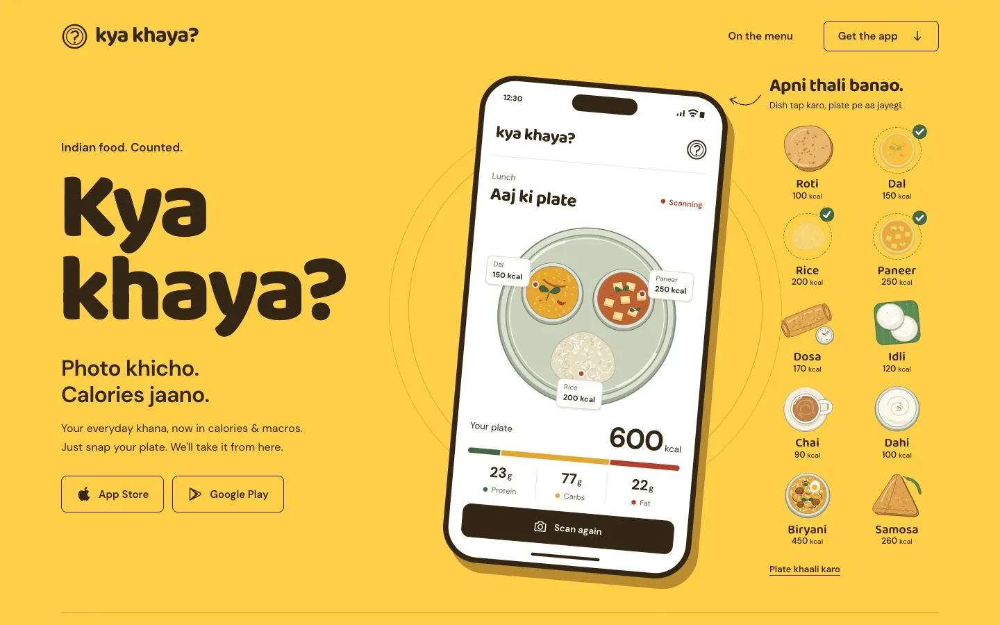
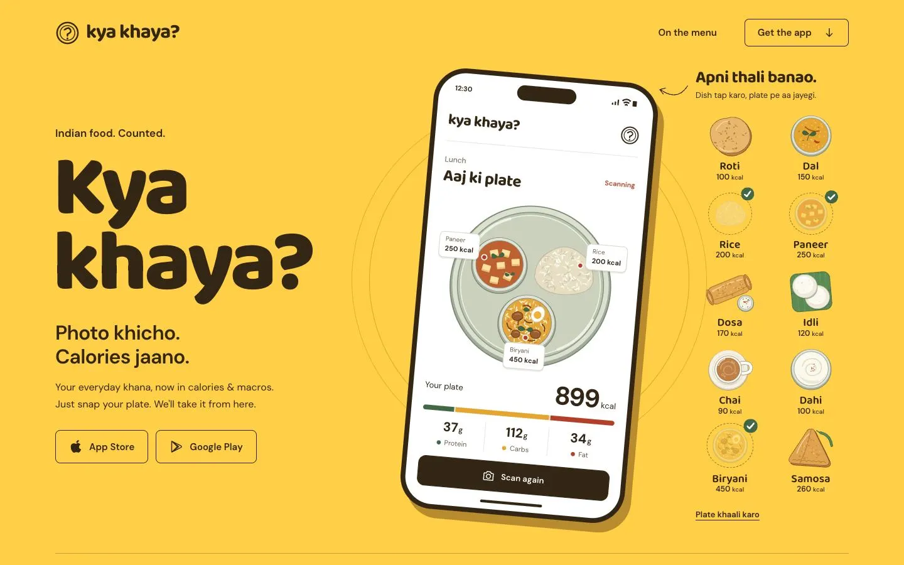

Kya Khaya
Calorie app landing page with a tap-to-build thali demo.
Landing page for a calorie app that reads a photo of an Indian plate and returns calories and macros. The copy is in Hinglish, for people who eat roti and dal rather than packaged Western food.
Visit kyakhaya.com

Design decisions
- Colour: the hero is one flat field of saffron yellow (#FFCF48) with dark brown text (#342615). There are no gradients or photo backgrounds, so the phone mockup and the dish illustrations carry all the detail.
- Type: 'Kya khaya?' is set very large in Baloo 2 (about 137px), with DM Sans for body copy. Baloo's rounded letterforms suit the Hinglish voice ('Photo khicho. Calories jaano.') and echo the round question-mark logo.
- Layout: a tilted phone mockup sits between the copy column and the 'Apni thali banao' dish grid, and a hand-drawn curled arrow ties the grid to the phone. The store buttons are outlined so they stay quieter than the demo.
- Interaction: tapping a dish in the grid puts it on the plate inside the phone. Dishes already on the plate fade to a dashed outline with a green tick, and the kcal total and macro bar recalculate. 'Plate khaali karo' clears it.
- Feedback inside the mockup: each dish on the plate gets a small tag with its name and kcal, and the status line switches from a green 'Identified' to a red 'Scanning' while the plate changes, so the demo behaves like the app's own scan screen.
- Illustration: one set of flat food drawings (roti, dal, rice, paneer, dosa with chutney, idli on a banana leaf, chai, dahi, biryani, samosa) is reused in the hero grid and in the 'Knows your food' section below, where each dish lists its portion, kcal in red and macros in small type.
- Mobile: the dish grid moves directly under the store buttons, five dishes across, with the same tick states, and the curled arrow turns to point down towards the plate.
On a phone
Kya Khaya has a single theme, so there is one set of captures.
The flow, step by step



Further down the page